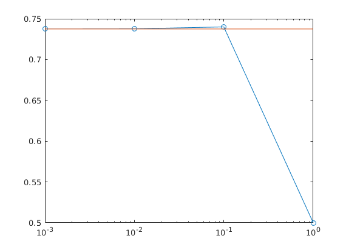
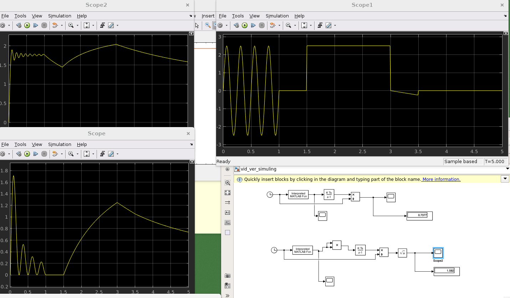

Contents
videjas un efektivas vertibas apreikins
%%videjas vertibas apreikins
t = 0:0.1:5;
N = length(t);
- ar formulu 3a
xvid3a=1/(N-1)*sum(sig(t(1:end-1)))
xvid3a =
0.7400
- ar formulu 3b
xvid3b=1/(N-1)*sum(sig(t(1:end-1)+1))
xvid3b =
0.7400
- ar formulu 3c
h = (t(end)-t(1)) /(N-1) ; xvid3c = 1/(N-1)*sum(sig(t(1:end-1)+h/2))
xvid3c =
0.7375
- ar formulu 4
xvid4=1/(N-1)*((sig(t(1))+(sig(t(end)))/2)+(sum(sig(t(2:end-1)))))
xvid4 =
0.7400
istas videjas vertibas apreikins * sinusoida
syms t_sin
A0=0; A = 2.5; T = (1-0)/4; f=1/T;
delay = 1;
y_sin = A0+A*sin(2*pi*f*(t_sin-delay));
int_sin = int(y_sin,t_sin,0,1)
int_sin = 0
*
syms t_saw
k = (0-(-0.25))/(3-3.5);
delay = 3;
y_saw = k*(t_saw-delay);
int_saw = int(y_saw,t_saw,3,3.5)
int_saw = -1/16
*
syms t_const
y_const = 2.5;
int_const = int(2.5,t_const,1.5,3)
int_const = 15/4
Liekam vissu kopa
ista_vv = 1/5*(int_const+int_saw+int_sin)
ista_vv = 59/80
Salidzinasim 3a formulu ar istu videju vertibu
dt=[1 0.1 0.01 0.001]; xvid3am = []; for dtc = dt t =0:dtc:5; N = length(t); xvid3a = 1/(N-1)*sum(sig(t(1:end-1))) xvid3am =[xvid3am;xvid3a] end semilogx(dt,xvid3am,'-o',dt,dt*0+ista_vv)
xvid3a =
0.5000
xvid3am =
0.5000
xvid3a =
0.7400
xvid3am =
0.5000
0.7400
xvid3a =
0.7378
xvid3am =
0.5000
0.7400
0.7378
xvid3a =
0.7375
xvid3am =
0.5000
0.7400
0.7378
0.7375
 Simulink

lai palaist simulink ,vajadzetu definet dt = 0.01
Secinajumi:
Ar matlab programaturu mes iemacijamies apreikinat videju vertibu un efiktivu vertibu ar dazadiem formulam(metodiem),ka ari iemacijamies ar Simulinku modelet funkcijas videju vertibu apreikinasanu.